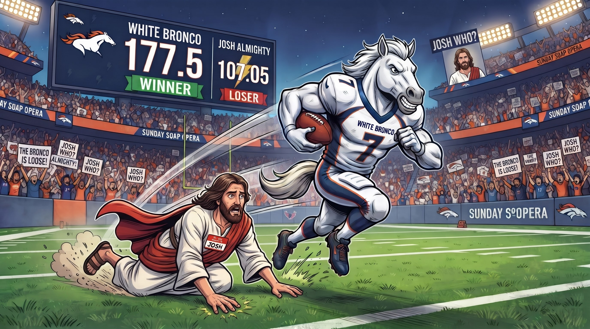

Stop the presses, lock the cabin doors, and strap on your crash helmets! Week 11 in The Sunday Soap Opera featured a 70.45-point East division beatdown that rattled the fillings out of Josh Almighty's teeth, a West playoff-seeding power move by The Pain Train, a feline-on-Steeltown hairball fight where both teams forgot how to play football, and a pre-kickoff trade raid by the Bi-Managers at Clench Tuxedos.
In our official Week 11 Marquee Matchup of the Week presented by Gassy Gus's Artisanal Bean & Mattress Outlet, White Bronco didn't just defend first place in the East—they ran Josh Almighty off the highway in a merciless 177.50 to 107.05 annihilation.

Coming off a 181-point explosion in Week 10, Josh Almighty walked into Sunday looking like an unstoppable juggernaut—and left looking like roadkill. Dak Prescott went nuclear with 47.15 points, Brock Purdy added 29.75, Javonte Williams chipped in 21.10, and kicker Tyler Bass booted 21.00 points all by himself! Meanwhile, Josh Allen (12.20), Trevor Lawrence (12.75), and Jonathan Taylor (2.70) all went on unannounced vacation, leaving Jacoby Brissett's 16.50 points stranded on the bench. White Bronco improves to 9-2-0 with a two-game stranglehold on the East!
Choo-choo, mother-lovers! Looking to upgrade their playoff seating, The Pain Train blew straight through RUN CMC’s station in a 149.10 to 108.60 statement victory.
Patrick Mahomes (33.20), Ashton Jeanty (23.90), and Cam Ward (23.70) turned Sunday into a demolition derby, propelling The Pain Train to 5-6-0 and vaulting them past RUN CMC into the #3 seed in the West on the Points For tiebreaker (1399.55 to 1341.55)! Both squads remain safely inside the top-four playoff cut line, though RUN CMC got 26.20 from Geno Smith only to watch Brock Bowers lay a big fat goose egg (0.00) while Christian McCaffrey mustered a mortal 12.20.
The Burger King kept his grill sizzling at 500 degrees, doubling up the bye-ravaged Autobots syndicate 150.80 to 75.85 to stay tied with White Bronco for the best record in the league.
Fresh off his Wednesday trade spree, Whopper Wentzday immediately cashed in on newly acquired Jameson Williams (16.30) and Aaron Rodgers (15.25), while Jared Goff tossed 27.15 points of Grade-A beef. The Autobots mob had six players on bye, started a bye-week defender (0.00), and got just 3.10 points from Ja'Marr Chase—dropping to 2-9-0 as they count down the days until the 2027 draft.
Marr Burrow Smokes handled business without breaking a sweat, extinguishing Kyler Duty 144.35 to 112.25 to keep pace in the West.
Jonathon Coleman erupted for 30.90 points alongside Joe Burrow (23.90) and the Texans defense (19.00) to push Marr Burrow Smokes to 8-3-0. Kyler Duty actually got strong outings from Chuba Hubbard (24.00), Baker Mayfield (20.95), and Travis Kelce (19.40), but starting a bye-week kicker, a bye-week linebacker, and zero-point Courtland Sutton kept them anchored to the bottom of the West at 2-9-0.
The fairy-tale winning streak is officially over! After pulling off a pre-game trade to pry running back Chase Brown away from Three Dots an a Dash, the synchronized Bi-Managers at Clench Tuxedos snapped TDnD’s two-game heater with a 134.40 to 113.70 victory.
Ironically, Chase Brown celebrated his debut in a Tuxedo by laying a 3.60-point egg against his old club! Fortunately for the Bi-Managers, C.J. Stroud (27.40) and last week's trade prize Emmett Johnson (20.30) carried the load to push them back over .500 at 6-5-0, where they still boast the second-highest Points For in the entire league (1609.50). TDnD got solid quarterback play from J.J. McCarthy (17.95) and Jayden Daniels (16.95), but D.K. Metcalf’s 0.20-point disappearance doomed them to 3-8-0.
In a "Kirk Cousins Custody Bowl" so ugly it should have been aired behind a parental advisory warning, the Danger Cats clawed past Steeltown Junkies 93.35 to 76.50.
Stop me if you’ve heard this one before: the Danger Cats left TWO starting lineup spots completely empty (a WR slot AND a defensive slot!), left Justin Herbert’s 21.75 points locked in a litter box on the bench, watched Kirk Cousins cough up a pathetic 7.75-point hairball against his former owners, and STILL WON! Why? Because Steeltown Junkies trotted out Kyle McCord (1.00) and K. Black (1.50) at Superflex, letting Harrison Butker (15.00) lead their entire franchise in scoring. The stray Cats stumble to 6-5-0 while Steeltown tumbles to 4-7-0.
By Barry Lee Competent
At 9-2-0 with 1,628.40 points scored and a 70-point public flogging of Josh Almighty fresh in the rearview mirror, White Bronco is currently parading around the East like they already booked the engraver for the championship trophy. On paper, it is easy to see why the bandwagon is overflowing: Dak Prescott (47.15) and Brock Purdy (29.75) are operating like a two-headed cheat code, Bo Nix is lounging on the bench as luxury Superflex insurance, and CeeDee Lamb, Drake London, Chris Olave, Javonte Williams, and Tucker Kraft give them legitimate firepower across the board.
Hold your horses, though—before we crown them, let’s remember whose nameplate is bolted to the hood. This is White Bronco, a franchise historically engineered to step on a garden rake the exact nanosecond the playoffs begin! Look beneath that shiny 177.50-point hood in Week 11: their entire offense lives and dies on Dak and Purdy combining for 75 to 80 points every Sunday, while their supporting skill slots—Jaylen Warren (2.90), Adonai Mitchell (3.00), and Tyler Warren (2.20)—did little more than get their cardio in. When the cold December winds blow and one of those quarterbacks inevitably turns back into a pumpkin in Week 15, there is no bell-cow RB1 safety net waiting to catch them. Until they actually survive a postseason Sunday without choking on a hairball, this beat writer is enjoying the show—with one hand firmly on the curse alarm.
Clench Tuxedos Receives: C. Brown (RB), Round 18 pick
Three Dots an a Dash Receives: D. Douglas (WR), Round 3 pick
Clench Tuxedos: Grade A Three Dots an a Dash: Grade B
Prior to Week 11 kickoff, the synchronized Bi-Managers at Clench Tuxedos walked right into TDnD's front office and bought starting running back Chase Brown for Demario Douglas and a 3rd-round pick! Even though Brown laid a 3.60-point egg in his debut against his former squad, stacking him alongside Kyren Williams, Kenneth Walker III, and Emmett Johnson gives the 6-5 Bi-Managers an absurdly deep stable for December. Meanwhile, 3-8 TDnD pivots toward 2027 by banking a valuable 3rd-rounder and a young receiver.
Projection: White Bronco 136.68, Clench Tuxedos 128.99
Gazette Pick: White Bronco 🔮
Our Week 12 Marquee Matchup of the Week, brought to you by Aunt Edna's Discount Root Canal & Bait Barn! The East's two highest-scoring juggernauts collide as 9-2 White Bronco (led by Dak Prescott and Brock Purdy) hosts the 6-5 Bi-Managers, who are banking on a bounce-back game from Chase Brown alongside C.J. Stroud and Amon-Ra St. Brown. Bronco edges out a classic.
Projection: Danger Cats 137.28, Three Dots an a Dash 125.62
Gazette Pick: Danger Cats 🔮
Even with an empty defensive slot STILL staring back at us from the Danger Cats' roster sheet, Deshaun Watson (21.15 proj), Jahmyr Gibbs (19.46 proj), and Kirk Cousins (18.62 proj) give the felines plenty of firepower against a TDnD squad adjusting to life without Chase Brown. Cats survive another self-inflicted wound.
Projection: Josh Almighty 135.84, Steeltown Junkies 86.74
Gazette Pick: Josh Almighty 🔮
Fresh off getting embarrassed by White Bronco, Josh Allen and Trevor Lawrence take out their frustration on a Steeltown roster projecting just 86.74 points with Drake Maye and Puka Nacua still sidelined. Almighty bounces back in a landslide.
Projection: Whopper Wentzday 144.57, The Pain Train 118.46
Gazette Pick: Whopper Wentzday 🔮
Huge West division clash! The Pain Train just climbed into the #3 seed, but now has to survive a road trip to face the 9-2 Burger King, who finally gets Bijan Robinson (15.22 proj) back off bye to pair with Bucky Irving and Jared Goff. Whopper keeps rolling.
Projection: Marr Burrow Smokes 146.65, Autobots 93.29
Gazette Pick: Marr Burrow Smokes 🔮
Joe Burrow (28.90 proj) and Caleb Williams (22.25 proj) have Marr Burrow Smokes projecting a league-high 146.65 points, while the Autobots mob is currently starting tight end Dallas Goedert in their Superflex spot. Chalk up another W for Marr Burrow.
Projection: RUN CMC 119.19, Kyler Duty 101.01
Gazette Pick: RUN CMC 🔮
After getting bumped down to the #4 seed on Points For, RUN CMC gets a prime bounce-back spot to pad their playoff cushion against 2-9 Kyler Duty (who currently has Matthew Stafford's 18.30 projection sitting on the bench behind Rico Dowdle). Christian McCaffrey and James Cook get RUN CMC back to .500.